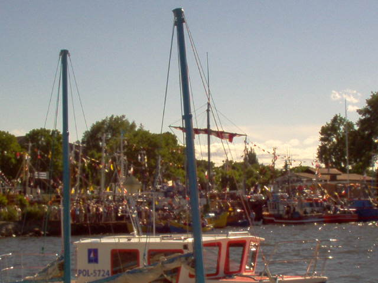

ODPUSTY
Odpusty: w Ku¼nicy obchodzimy:
nasz odpust 13.VI na ¶wiêtego Antoniego,
pielgrzymujemy do Swarzewa piechot± na odpust Matki Boskiej Szkaplerznej
p³yniemy ³odziami do Pucka na odpust ¶w. Piotra i Paw³a.
